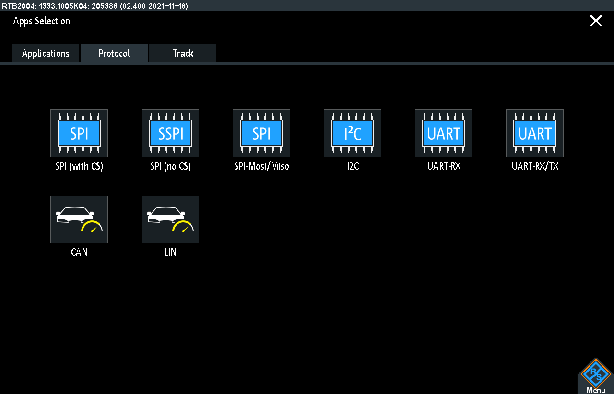
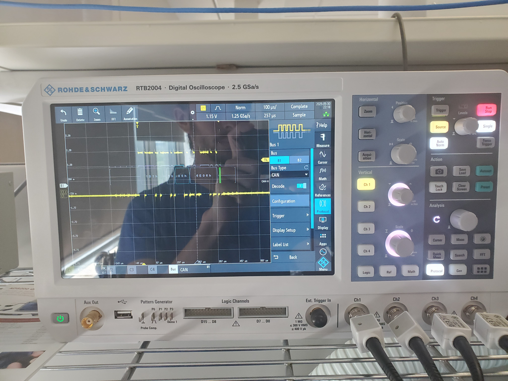
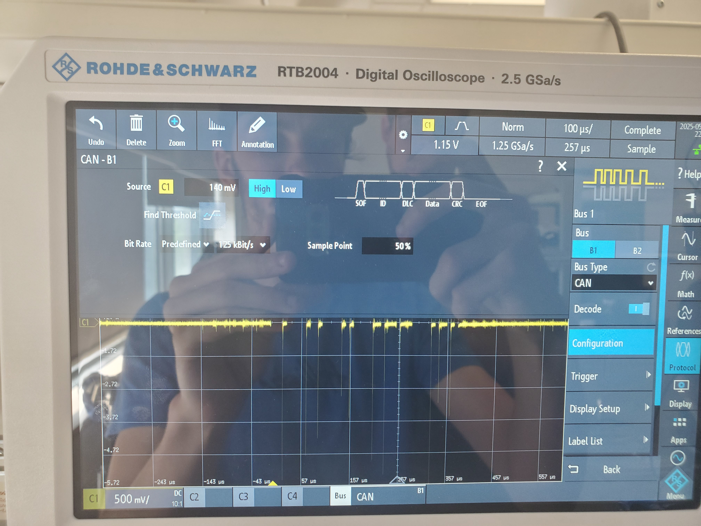
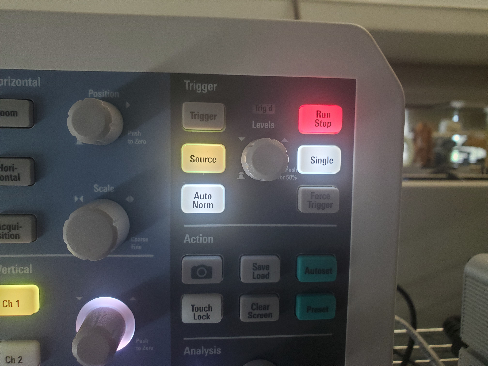

For the Oscilloscope to Update/Trigger on the CANBUS Messages with the Correct Reading the Oscilloscope Must be set on CAN protocol. (Bottom Left on the Image Below)
As seen in the photo below Oscilloscope must be set up with a trigger of 1.15V seen at the top of the screen.
"Auto norm" must be on to wait till a message apears on the Oscilloscope before triggering.
the bus that is being captured for this project is as follows in the photo.
Whenever a new message needs to be captured press single and wait for the auto norm to triger on the next CANBUS message.
